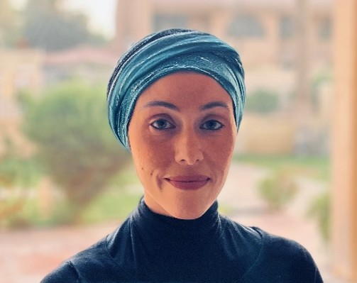
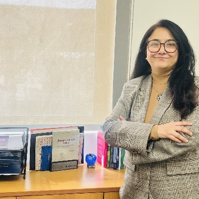
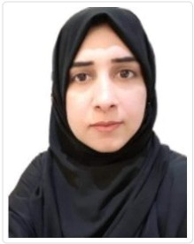

Meet the leadership, researchers, and collaborators driving CIAS's mission across five interconnected research tracks.
Dean, College of Sciences & Human Studies
We strive to foster interdisciplinary research that bridges science, technology, and the human dimension. By integrating AI and cognitive sciences, we aim to generate solutions that address real-world challenges and uplift communities. ”

Research Center Lead
At CIAS, we champion inclusive, ethical, and human-centered innovation. Our goal is to advance cognitive intelligence and AI research that enhances human potential and drives sustainable, positive change across society. ”
RESEARCH TRACK LEADS
Our track leaders drive interdisciplinary research and innovation across key thematic areas, advancing knowledge with purpose.

Research Center Lead
Lead Researcher: Cognitive Intelligence and Inclusive Learning
Dr. Arifi Noman Mohammed Waked is an Assistant Professor in the Department of Sciences and Human Studies at Prince Mohammad Bin Fahd University. She holds a PhD in Hearing and Speech Sciences with specialization in Psycholinguistics from the University of Maryland. With over 20 years of experience in higher education, she has served as educator, mentor, and academic advisor. Her research focuses on AI in education, cognitive psychology, psycholinguistics, bilingualism, and language acquisition, with special emphasis on EFL learners and individuals with cognitive or perceptual differences.
Lead Researcher
Lead Researcher: AI Integration in Education and Healthcare
Dr. Jose P. Cerin is a Full Professor at Prince Mohammad Bin Fahd University with a PhD in Philosophy from Spain and postdoctoral fellowships at Cambridge and Oxford Universities. His expertise spans computational social sciences, philosophy of science, and human–AI systems. His research focuses on AI integration in education and healthcare, ethical governance, leadership, and human–AI collaboration. He has authored 19 books and over 100 publications, including more than 50 peer-reviewed articles, and is widely recognized for contributions to methodology, innovation, and interdisciplinary research.

Lead Researcher
Lead Researcher: Social Dynamics and Elicitive Learning
Dr. Alia Amir is an Associate Professor in Language, Culture, and Communication and Research Coordinator for Social Dynamics and Elicitive Learning at Prince Mohammad Bin Fahd University. Her interdisciplinary research explores linguistics, social interaction, and educational communication within AI-mediated environments. She focuses on how language, culture, and cognition shape human interaction and learning processes. Her work examines how humans and intelligent systems jointly construct meaning, with particular attention to ethics, identity, and the evolving role of AI in socially embedded educational contexts.

Lead Researcher
Lead Researcher: Mathematical Foundations and Scientific Inquiry in Education
Dr. Najma Saleem is an Associate Professor of Mathematics and Research Coordinator for Mathematical Foundations and Scientific Inquiry in Education at Prince Mohammad Bin Fahd University. Her expertise lies in applied mathematics, computational modeling, fluid dynamics, nanofluids, and physiological flow systems. She has extensive experience in interdisciplinary research, particularly in thermo-biofluid dynamics, electroosmotic transport, and energy-efficient system design. Her work integrates sustainable engineering principles and advanced mathematical modeling. She has published widely in international journals and has received multiple research productivity and academic excellence awards.
Lead Researcher
Lead Researcher: Transdisciplinary and Humanities Studies
Dr. Edyta Wolny-Ibrahim is an Assistant Professor in the Department of Sciences and Human Studies at Prince Mohammad Bin Fahd University. She holds a PhD in Humanities (Literary Studies) from the University of Warsaw, with research focusing on Egypt, Islamic education, and cultural identity. Her interests include Arab culture, globalization, Saudi Vision 2030, and contemporary social change in the Arab world. She teaches Modern Standard Arabic and Egyptian dialect and has received recognition for promoting Arabic language and culture internationally.